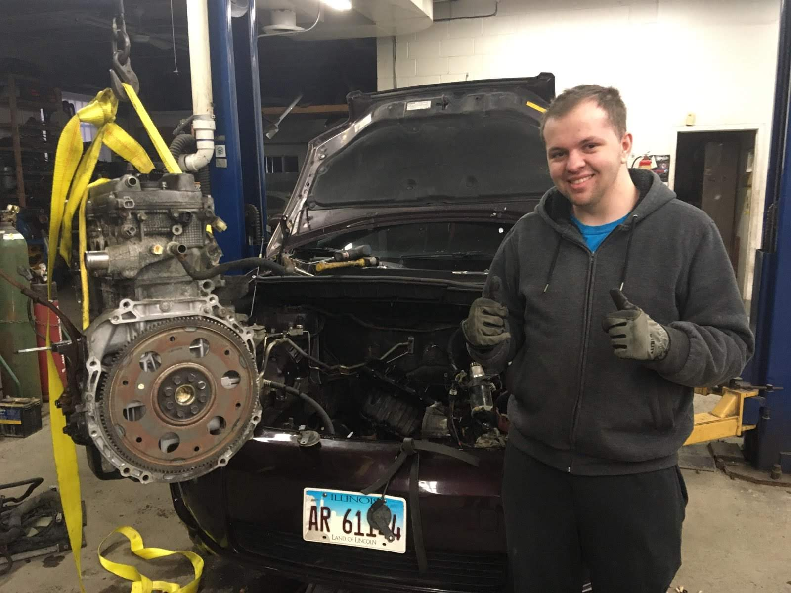

Self-Taught · ~1 Year
Rebuilding a Car Engine From the Ground Up
During COVID I needed a dependable way to get between home and college, but a working car wasn’t in my budget. So I bought one with a blown engine for next to nothing and spent the better part of a year teaching myself to diagnose it, tear it down to the root cause, and rebuild it piece by piece — until it started and drove again.